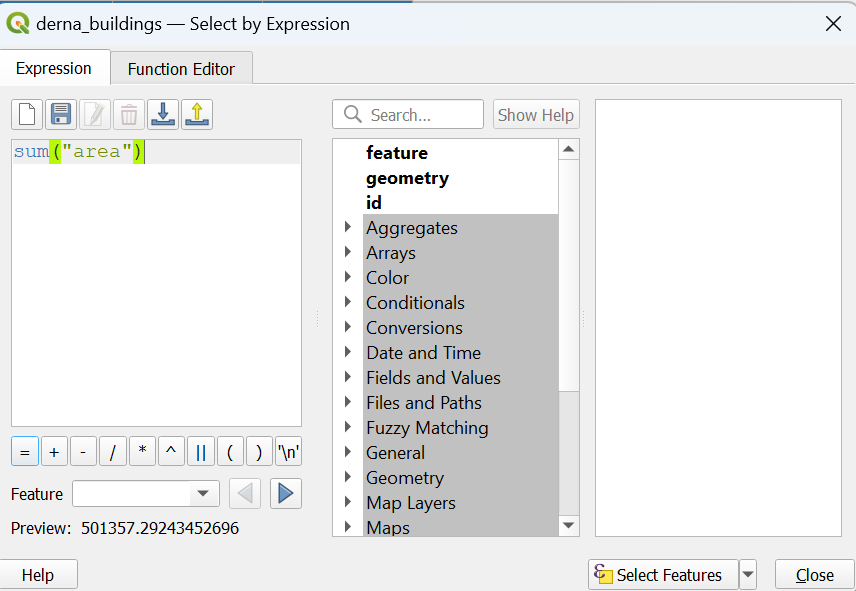

Before Flood Scenario
1 September 2023 OSM Roads
Download:
Click on raw directory index
Download ‘libya-230901-free.shp.zip’
Load the roads file into the qgis project
Rename it as 'gis_osm_roads_free_1sep 1' for clarity
Clipping:
From the menu bar, navigate to Vector → Geoprocessing Tools → Clip
Save the output to the project geopackage as 'osm_roads_1sep23' with EPSG:3197
Finding road speeds:
Derna considered urban as it is a city so we will use 50km/h from (Global Road Safety Facility)
Assume walking speed 5km/h Preferred walking speed - Wikipedia
We assume 15km/h for unclassified and service roads as unclassified roads are smaller and people tend to drive sloer on service roads as they approach their destination.
Right click and open the attribute table for the roads layer
Open field calculator.
Set the field name as speed, output field type as integer, and input the following expression
CASE
WHEN “fclass” = ‘primary’ then 50
WHEN “fclass” = ‘primary_link’ then 50
WHEN “fclass” = ‘residential’ then 50
WHEN “fclass” = ‘secondary’ then 50
WHEN “fclass” = ‘secondary_link’ then 50
WHEN “fclass” = ‘service’ then 15
WHEN “fclass” = ‘tertiary’ then 50
WHEN “fclass” = ‘tertiary_link’ then 50
WHEN “fclass” = ‘trunk’ then 50
WHEN “fclass” = ‘trunk_link’ then 50
WHEN “fclass” = ‘unclassified’ then 15
ELSE 5
END
Click ok
Untoggle the pencil icon to save the changes.
OD Matrix for Evacuation Routes
Import the shortest_path file from the During Scenario.
Click once on the shelters layer from the layers panel
Open select by expression and type (get_feature(‘shortest_paths_0a8a2e18_0702_4521_bcfa_34e11bb36e35’,‘destination_id’,@id) IS NULL) or @id=27
The exact string for the shortest_path layer may depend on yours, you can find it from the search bar in the middle pane.
27 is included by hardcoding as it is the destination node for the null values as it is the last value in the (during) shortesst_path attribute table
Click 'select features' then 'Close'.
Open 'Select by Location' and input according to the photo below, then click 'Run' and 'Close'.
You obtain the following
From Processing Toolbox, search for 'OD Matrix from Layers as Lines (m:n)'
Input the following parameters as shown in the picture below:
Then right click on the layer in the layers panel to export it, replacing the spaces in its name with underscores.
For comparison, we also create an OD matrix with similar parameters that optimises for shortest distance, and name it output_od_matrix_distance.
Shortest Evacuation Path
- From the menu bar, navigate to Database -> DB Manager
Select from the dropdown virtual layers → project layers → Output_OD_matrix
Click on the SQL window icon (middle).
Type the following query then click 'Execute':
select origin_id, destination_id, min(total_cost) as shortest_path, geometry
from output_od_matrix
group by origin_id
Check load as a new layer and input the following settings before clicking 'Load'.
Save BEFORE_evac_routes to the geopackage and remove temporary layers.

Using this approach, the fastest route by car takes around 2 minutes. But the shelters are likely to be overcrowded as only 4 shelters are used for the 112 neighbourhoods in the flood extent.
Evacuation Routes to Prevent Shelter Crowding
We notice that only the shelters closer to the flood extent are used, which may be crowded.
To prevent shelter crowding and to get residents to evacuate to further and safer shelters, we will spread them out. Assuming an equal number of residents per neighbourhood and equal shelter capacity, we divide the 112 neighbourhood centroids by the 12 shelters (outside of flood extent not used in the During scenario), to obtain a rough ratio of 10 neighbourhoods to one shelter.
Open Jupyter notebook and navigate to the project directory where the CSV file is.
Create a new jupyter notebook file.
Type the following code:
import pandas as pd
od_matrix = pd.read_csv(‘output_od_matrix.csv’)[[‘fid’,‘origin_id’,‘destination_id’,‘total_cost’]]
costSorted = od_matrix.groupby([‘destination_id’])[‘total_cost’].mean().sort_values(ascending=False)
shelterAssigned = [-1 for i in range(113)]
shelterAssigned[43]=0
assigned = 0
for shelter in costSorted.index.values: # 12 iterations
toThisShelter = od_matrix[od_matrix[‘destination_id’]==shelter].sort_values(‘total_cost’)
count = 10
ttsRow = 0
while count > 0 and assigned<112 and ttsRow<112: #10+ iterations
start = int(toThisShelter.iloc[ttsRow][‘origin_id’])-1
if shelterAssigned[start]==-1:
#shelterAssigned[start] = shelter
shelterAssigned[start] = int(toThisShelter.iloc[ttsRow][‘fid’])
count -= 1
assigned += 1
ttsRow += 1
# writing to csv file
with open(‘assignShelters.csv’, ‘w’) as csvfile:
writer = csv.writer(csvfile)
writer.writerow([‘fid’]) #header
# writing data rows
for i in shelterAssigned:
if i != 0: #removing error data
writer.writerow([i])
The aim of the above code is to
Calculate the mean distance between a shelter and all the neighbourhood centroids in the flood extent.
Starting from the shelters with the furthest mean distance, we assign to it the 10 closest neighbourhoods that are not already assigned to any shelter.
The code will stop when all neighbourhoods have been assigned. The last shelter to be assigned (closest to the flood extent) will have 2 neighbourhoods assigned only, but it can act as a buffer if any other shelter is overcrowded.
Load the output csv into qgis
Click once on the output_od_matrix (exclude during shelters) layer
Open Select by Expression
array_contains( aggregate(‘assignShelters_00ea0981_86ba_40ae_9f34_343c23af4255’,‘array_agg’,“fid”),to_string(“fid”))
Click 'Select Features'
Save selected features to the geopackage as assignedShelters
Mapping
Double click on the flood extent layer to open its properties
Navigate to Symbology if it is not already selected
Select 'Simple line'
Set the colour to blue and the stroke width to 1mm. Set stroke style to dot line.
Similarly, set the lines for the OD_matrix and the fastest routes as 0.5mm.
Set the symbol of shelters as the topo camp SVG marker.
Click on 'Labels'.
Set 'Single Labels'.
Set value to 'Name'.
Click on 'Buffer', select 'Draw text buffer'.
Click on 'Formatting', then insert ' ' in Wrap on character.
Click 'Apply' and 'OK'.
Double click on the assignedShelters layer to open the properties, then click on Symbology.
Change 'Single Symbol' to 'Categorized', set value as 'destination_id'.
Click on 'Symbol' then set the thickness to 1mm.
For each symbol, double click into it.
Click on 'Simple Line'.
Input the following offsets and colour (bold in the first row):
-2(red) -1(green) 0 (orange) 1 (blue) 2 (brown) 3 (purple) 14 12 15 1 8 11 7 26 25 27 13 10
- The table was derived by finding routes that overlapped and assigning them different offset and colours.
Click on 'Apply', then 'OK'.
Click on Project → New Print Layout.
Name the layout 'Before model' then click 'OK'.
Click on Add item → Add Map. Drag the map to fill the whole extent of the layout.
Set map rotation to 10 degrees.
Set scale to 26000
Adjust the extents such that all shelters are in view. (Use the same increment/decrements of 100 for X min with X max, and for Y min with Y max to maintain the aspect ratio of the map.) This are the extents I ended up with:
Click on Add item → Add label
Type 'Assigned Evacuation Routes to Shelters'
Set the font to Georgia, 27 points, style as Bold.
Place the label centrally aligned at the top of the map.
Click on Add item → Add North Arrow, drag a rectangle to insert a north arrow.
Click on Add item → Add Scale Bar, drag a rectangle to insert a scale bar.
The legend was made on Inkscape, but you can screenshot the following photo, remove its background and save as .png, then insert into your map.
Click on Add item → Add Picture
Select the radio button besides 'Raster image'
Browse for the saved png photo.
Move the legend to the bottom right of the map such that it does not cross the flood extent.
Analysis (Distance)
We double click the layer assignedShelters to open its properties.
Select 'Join'.
Select output_od_matrix_distance as the join layer, fid as the join field, then select origin_id, destination_id, total_cost as the Joined fields. The inclusion of origin_id and destination_id is to double check the join is performed correctly. Click on "OK" to close the edit vector join window, then click on "Apply" and "OK" to exit the properties window.
The Join has been performed successfully.
(Optional) Return to the Edit Vector Join window to uncheck origin_id and destination_id for a cleaner table.
Analysis (Area)
Load the Open Aerial Map 13 Sep tiff file into the qgis project.
Load the shelter points layer
Click on 'New Shapefile layer'
- Create a new Polygon layer with the project CRS named as 'shelter area.shp' in a Shapefile subfolder of the project folder.
- Click on the pencil icon to toggle editing mode on, then click 'Add Polygon Feature'.
- Trace the building outline of shelters using the satellite image. Left click on the edges of the building when tracing and right click when done. Follow the fid of the shelter layer (which you may check using the identify features tool) when assigning id. You may also refer th OpenStreetMap or OSM_buildings layer for outlining buildings in cloudy areas.
When done, open the attribute table of the shelter area layer.
Open Field calculator. Create a new decimal field called 'area' using the expression $area
Untoggle edit mode to save the changes.
Open 'Select by Expression' and input the expression sum(“area”)
- This means that the area of the shelters is 3 hectares.
Load the OSM_buildings layer and clip by the derna hexagon layer.
Save the result as derna_buildings.
Open 'Select by Location' and input Select features from derna_buildings where the features are within flood_extent_neighbourhoods.
Open attribute table for derna_buildings, then field calculator.
Create a new decimal field 'area' with the formula $area, only updating the selected features

Click 'OK', then untoggle editing mode to save changes.
Open 'Select by Expression', then input the formula sum("area")

- This means that the residential area in the flood extent is 50 hectares.